|
|
Disclaimer
LEGO®, the LEGO® logo, the Brick, MINDSTORMS®, SPIKE™, and the Minifigure are trademarks of ©The LEGO® Group. All other trademarks and copyrights are the property of their respective owners. All rights reserved.
This page isn’t affiliated, authorized, or endorsed by The LEGO Group.